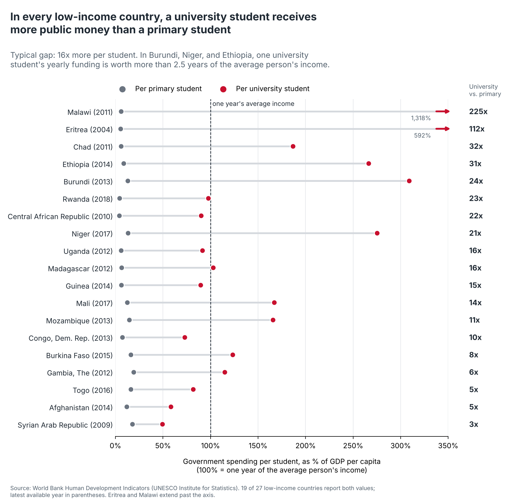
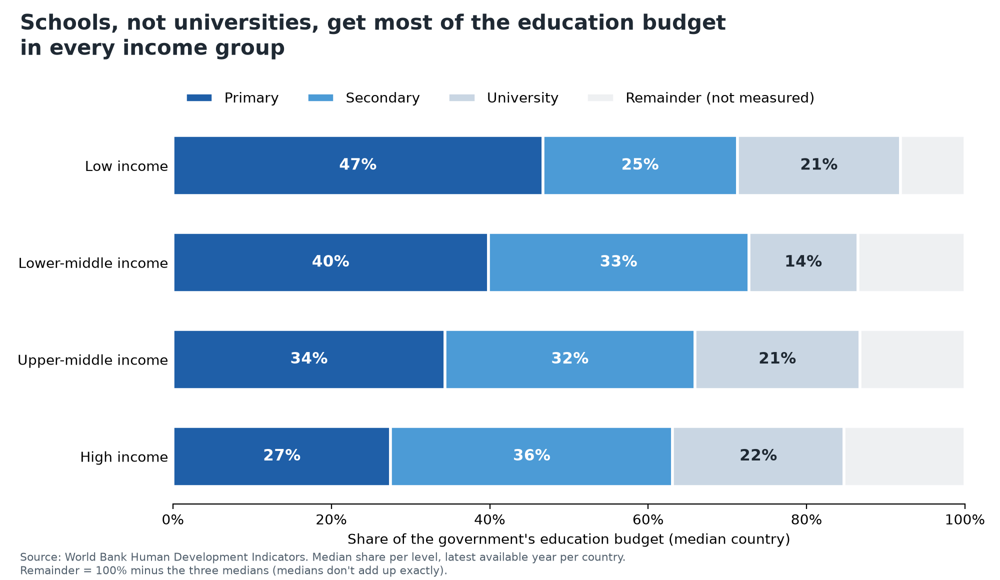

Proposition: Governments prioritize university students over primary school students.Governments prioritize university students over primary school students.
FOR the Proposition

Design Decisions and Rationale:
- Spending per student, filtered to low-income countries (-1). We divided university spending per student by primary spending per student and only showed the low-income group, where the median gap is 15.7x. Across all 150 countries, the median is only 2.0x. Showing every income group would be more complete, but the gap shrinks fast and makes the argument weaker.
- Title says “every low-income country” (-1). Only 19 of the 27 low-income countries report both values, and only the footnote says this. We kept the strong wording because “in all 19 reporting countries” sounds unsure, and readers remember the title more than the fine print.
- Clipping Malawi and Eritrea at 350%, with their values labeled (1). Malawi (1,318%) and Eritrea (592%) would have stretched the axis and squished every other row. We cut them off with an arrow and printed their real values, so the chart stays easy to read without hiding any data.
- Linear axis and sorting the largest gaps first (-0.5). On a linear scale, a 16x gap shows up as a long bar next to a short one, so the difference is easy to see right away. A log scale is more common for ratios, but it would shrink the gaps and make them look smaller. Sorting by the gap puts Malawi, Eritrea, Chad, and Ethiopia at the top where people look first, and the smallest gap, Syria at 3x, ends up at the bottom where most readers stop paying attention.
AGAINST the Proposition

Design Decisions and Rationale:
- Switching from spending per student to share of the budget (-1.5). Per student, university gets more in 84% of countries, so we used share of the education budget instead. Since there are many more primary students, universities become the smallest slice. Every number is real, but the chart answers a different question than the proposition asks.
- Pale color for universities (-1). Primary and secondary are dark blues, while university is a pale gray-blue that blends into the background, even when its share is close to primary’s. Giving university a bright color would have been more neutral, but it would have pulled attention to the slice we wanted readers to skip over.
- Exact labels on a full 0 to 100% axis (1.5). Every segment shows its exact percentage, the axis starts at 0, and the source and method are listed under the chart. This makes the chart look trustworthy, so the persuasion comes from what we chose to measure, not from distorted bars.
- Title groups primary and secondary as “schools” (-0.5). The proposition compares university to primary school, but our title compares university to “schools,” which puts secondary education on our side too. That makes the gap look bigger, since universities lose to 63 to 73 percent of the budget instead of 27 to 47 percent. We avoided stronger words like “neglected” or “starved” because readers would notice the slant right away.
- Grouping countries by income and using the median for each level (0.5). For each income group, we took the median share for primary, secondary, and university, using each country’s latest year. This fits 179 countries into four bars and shows the same pattern in every group, but it also hides the 14 countries where university gets the biggest share. Since medians don’t add up to 100%, we showed the leftover as “Remainder (not measured)” and explained it in the footnote.
Final Reflection
The FOR side ended up being easier because the data cooperated for us: Around 84% of countries spend more per university student than per primary student. We had to choose how we wanted to frame the gap but that was mostly it. The AGAINST side was hard because after scouring the numbers we couldn't find any per-student angle where primary students beat university students without lying. Even across high-income countries, university students get about 1.5 times more. Our second opposing chart included Burundi and Rwanda at the checkpoint, which we chose because the gap decreased most there, by about three-quarters. The reviewer felt those two countries were obviously hand-picked, and our subsequent internal checks reinforced this concern, as the data for most nations with substantial records tends to stay level. We agreed when we saw it. We scrapped the second chart and replaced it with the budget share chart. To make our case against the proposition, we found ourselves editing the question, not the data.
What surprised us was how little of our persuasion relied on traditional deceptive tricks. Neither of our charts truncated an axis, made up a value, or hid where it came from. Most of our persuasion came from before we even started building our charts: the metric we chose to plot, which countries we decided to display, how we grouped them and what we decided to name the chart. The same dataset can say both "university students get 16 times more" and "universities get the smallest share" and be true both ways. We also learned that the non-deceptive aspects of our charts, such as giving exact values in labels and putting more information in footnotes, made the persuasive parts more effective by allowing the viewer to infer that the chart was carefully put together.
We think that visualization is ethical if your reader would reach the same conclusion if you described every choice you made to them. We think that's why clipping outliers and labeling their actual values is acceptable: No one would change their mind once you point it out. Switching from spending-per-pupil to budget share is not acceptable: if someone noticed you did it, they'd probably take back the conclusion the chart gave them. Footnotes full of the unabridged truth help, but don't undo a misleading chart title. We'd draw our line here: a persuasive choice is acceptable when your chart still communicates a true pattern if you disclose what you did, and not okay if the point you're trying to make only works when your reader doesn't know what you left out.